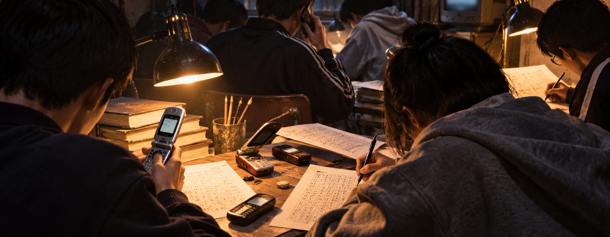

서론 · 1558년
출제자가 문제를 흘린 날
1558년 겨울, 조선 조정이 시끄러웠다. 과거에 을과 수석으로 붙은 신사헌이 문제를 미리 알고 시험을 쳤다는 소문 때문이다. 『명종실록』은 속사정을 이렇게 전한다. 시험관 정사룡이 책문, 곧 나라의 정책을 묻는 논술 문제의 제목을 정하면서 몰래 신사헌에게 먼저 글을 짓게 했고, 신사헌은 글 잘하는 사람의 손을 빌려 답안을 썼다. 문제가 샌 곳은 시험장 밖이 아니라 출제자의 입이었다.
물의가 들끓자 감찰을 맡은 대간이 잇달아 상소를 올렸다. 정사룡은 파직됐고, 신사헌의 이름은 합격자 명단에서 지워졌다. 그러나 이야기는 여기서 끝나지 않는다. 신사헌은 당시 권세를 쥔 이량의 심복이었다. 이량이 신사헌의 아들을 시켜 억울함을 호소하게 하자 임금은 사건을 다시 조사하라고 명했고, 신사헌의 급제는 이듬해 되살아났다. 사관은 이 과정을 실록에 또렷이 적어 두었다. 부정이 드러나도 힘 있는 사람 곁에서는 처분이 뒤집힐 수 있었다.
사건 기록 카드 | 눌러서 기사 속 문장과 출처를 확인하세요
468년이 지난 오늘, 한국의 시험장은 같은 걱정을 한다. 수능 시험장에서는 수험생의 안경까지 살핀다. 달라진 것은 답을 쓴 쪽이 사람이 아니라 기계일 수 있다는 점이다. 우리나라 시험 부정은 언제부터 시작됐고, 왜 사라지지 않을까. AI 시대에는 무엇이 달라질까. 차례로 따라가 보자.
문제가 새고, 답을 빌리고, 처분이 뒤집혔다. 시험 부정의 구멍이 한 사건에 모두 있었다.
시험 부정의 기원
시험이 벼슬길이 되자 부정도 따라붙었다
시험이 사람의 운명을 바꾸기 시작하자 부정행위도 그림자처럼 따라붙었다. 과거제는 587년 중국 수나라에서 시작됐고, 우리나라에는 958년 고려 광종 때 들어왔다. 시험 한 번으로 벼슬길이 열리니 시험에 목을 거는 사람이 늘었고, 속임수도 함께 늘었다.
- 587중국 수나라에서 과거제 시작
- 958고려 광종 때 우리나라에 들어옴
- 조선『경국대전』이 부정행위 수법을 나누어 금지
조선의 법전 『경국대전』은 부정행위 수법을 나누어 이름을 붙이고 금지했다. 책을 몰래 들고 들어가는 협책, 남의 글을 빌려 쓰는 차술, 남을 시켜 답안을 대신 쓰게 하는 대술이다. 차술과 대술이 드러나면 곤장 100대와 도형 3년(징역과 비슷한 형벌)에 처하고, 이어지는 두 번의 과거에는 응시하지 못하게 했다. 신사헌이 남의 손을 빌려 답안을 쓴 일은 이 가운데 차술에 가깝다. 수법마다 이름이 붙었다는 것은 그만큼 이런 일이 알려져 있었다는 뜻이다.
용어 카드 · 눌러서 뜻을 확인하세요
협책
책을 몰래 들고 들어가는 협책
차술
남의 글을 빌려 쓰는 차술
대술
남을 시켜 답안을 대신 쓰게 하는 대술
차술과 대술이 드러나면 곤장 100대와 도형 3년(징역과 비슷한 형벌)에 처하고, 이어지는 두 번의 과거에는 응시하지 못하게 했다. 근거: 『성종실록』 220권에 인용된 『대전』
붙으면 인생이 바뀌는 시험일수록 속임수의 유혹도 커진다.
시대가 바뀌어도 사라지지 않았다
합격한 뒤에 다시 쓰게 하라
조선 후기로 갈수록 수법은 대담해졌다. 권세 있는 집안의 자제는 답안을 대신 써 줄 사람을 데리고 들어갔고, 답안을 봉하고 대조하는 관리를 매수해 남의 합격을 가로채는 '절과', 곧 도둑 합격까지 있었다. 시험을 관리하는 사람이 한패라면 문 앞의 소지품 검사는 소용이 없다.
영조는 방향을 바꿔 합격 뒤를 살폈다. 1749년의 면시법이다. 합격자를 발표한 다음 날 합격자들을 불러 글을 다시 짓게 했고, 제대로 짓지 못하면 남이 대신 써 준 답안으로 보아 합격을 취소했다. 시험장 안을 아무리 지켜도 새는 구멍이 있으니, 붙은 뒤에 정말 직접 답을 썼는지 확인하자는 발상이다. 다만 이 제도는 오래가지 못했다.
두 방식 비교 · 탭을 눌러 원문 문장을 비교하세요
1767년 우구 외 반입 금지
시험을 관리하는 사람이 한패라면 문 앞의 소지품 검사는 소용이 없다.
영조는 1767년에 한 걸음 더 나아가 시험장에 비를 막는 도구인 우구 외에는 아무것도 들이지 못하게 했다.
1749년 면시법
합격자를 발표한 다음 날 합격자들을 불러 글을 다시 짓게 했고, 제대로 짓지 못하면 남이 대신 써 준 답안으로 보아 합격을 취소했다.
다만 이 제도는 오래가지 못했다.
영조는 1767년에 한 걸음 더 나아가 시험장에 비를 막는 도구인 우구 외에는 아무것도 들이지 못하게 했다. 오늘의 소지품 검사와 닮은 조치다. 과거 제도는 1894년 갑오개혁으로 사라졌지만 시험으로 사람을 가려 뽑는다는 생각은 남았고, 시험을 둘러싼 속임수도 함께 남았다.
쓴 사람이 정말 그 사람인지 합격 뒤에 확인해 보자던 270여 년 전의 물음이 AI 시대에 다시 돌아왔다.
현대의 간 큰 사건 · 2004년
고시원에 모인 학생 예순 명, 다수결로 만든 '정답'

2004년 수능 사건
집단의 답은 왜 정답이 아니었나
당시 보도에 등장하는 집단과 집계의 관계를 표시했습니다. 흐름 재생 또는 각 단계를 눌러 보세요.
인원과 방 수는 기사 기준입니다. 각 방의 점 배치는 설명을 위한 도식이며 실제 인원 배분이나 통신 경로를 재현하지 않습니다.
2004년 11월 17일 수능날, 광주의 한 고시원에 방 네 개가 마련됐다. 방 안에는 '중계도우미'로 불린 고등학생과 대학생 60여 명이 모여 있었다. 같은 시각 시험장 안에는 휴대전화를 몰래 들고 들어간 수험생 40명이 있었다. 수사 과정에서 이들은 '선수'로 불렸다.
사건 구조 · 당시 보도에 나온 숫자만 표시했습니다
- 40명시험장 안, 휴대전화를 몰래 들고 들어간 수험생 '선수'
- 60여 명고시원 방 4개, '중계도우미'. 받아 적은 답 중 가장 많이 나온 답을 '정답'으로 삼음
- 170~180명선수와 일반 수험생. 문자메시지로 '정답'을 되돌려 받음
당시 보도에 따르면 작전은 이랬다. 선수들이 푼 답을 신호로 밖에 전하면, 고시원에서는 이를 받아 적은 뒤 문제마다 가장 많이 나온 답을 골라 '정답'으로 삼았다. 그 답을 문자메시지로 선수와 일반 수험생 170~180명에게 되돌려 보냈다고 한다.
가상 체험 · 실제 시험이나 방법이 아니라 '다수결'의 원리만 보여 주는 장치입니다
다수가 고른 답은 정답일까
가상의 4지선다 한 문항이 있습니다. 선수 다섯 명이 각자 고른 답을 정한 뒤, 가장 많이 나온 답이 '정답'이 되는 과정을 확인해 보세요.
눈여겨볼 점은 이 '정답'이 정답이 아니라 다수가 고른 답이었다는 것이다. 다수가 틀린 답을 골라도 그 답이 정답처럼 되돌아가는 구조였다. 일은 곧 틀어졌다. 중계도우미로 일한 한 학생은 2교시부터 일부 선수가 답을 보내오지 않아 엉망이 됐다고 말했다. 답을 받지 못한 수험생이 항의 전화를 걸어 오기도 했다. 이 학생은 두 달 전 선배가 높은 점수를 받을 수 있다고 권해 죄책감 없이 가담했고, 이렇게 무서운 일인 줄 몰랐다며 뒤늦게 후회했다. 사건은 수능의 유효성 시비와 재시험 논란으로 번졌다.
교육부는 휴대전화 전파차단기와 금속탐지기를 들이고 감독관을 늘리며 부정행위자의 응시를 3년 제한하는 방안을 추진하겠다고 밝혔다. 재시험은 없고 정직하게 시험을 친 학생에게 불이익이 없게 하겠다는 말도 함께 나왔다. 12월 1일 기준으로 가담 혐의자는 전국 280여 명으로 불어났다. 이듬해인 2005년 11월 3일, 국회 교육위원회는 수능 부정행위자의 해당 시험을 무효로 하고 1년간 응시를 제한하는 고등교육법 개정안을 가결했다.
사람 예순 명이 방 네 개에 나눠 앉아야 했던 일이 있었다. 22년 뒤에는 어떻게 됐을까.
오늘의 이슈 · 2026년
160문항 중 한 문제만 틀린 사람
올해 제63회 세무사 시험의 수석 합격자는 1차 시험 160문항 중 한 문제만 틀렸다. 점수가 너무 이례적이라는 의혹이 일자 그는 11월 15일 AI로 부정행위를 했다고 시인하고 경찰에 자수했다. 시험 관계기관에 낸 경위서에는 초소형 카메라로 문제를 찍고 스마트폰의 생성형 AI로 풀었다고 적은 것으로 알려졌다.
그런데 시험 중에는 이런 행위를 아무도 잡아내지 못했다. 경찰이 시험 주관기관 관계자를 불러 부정행위를 포착하지 못한 이유를 확인하려는 것도 그 때문이다. 수석 합격자는 17일 피의자 신분으로 13시간 넘게 조사를 받았고 공범은 없다고 진술했다. 18일에는 경찰이 그의 자택을 압수수색했다. 경찰은 조력자가 있었는지 계속 살피고 있다.
당국의 대응은 빨랐다. 국세청은 16일 시험 무효와 5년간 응시자격 정지 처분 절차를 시작했다. 이는 청문 절차를 거쳐 결정할 예정이어서 아직 확정된 처분은 아니다. 한국산업인력공단은 해당인을 업무방해 혐의로 고소했고, 최근 3~5년의 최종 합격자 성적도 다시 점검하기로 했다.
11월 15~18일 경과 · 2026.11.19 오전 기준
- 11/15AI로 부정행위를 했다고 시인하고 경찰에 자수
- 11/16국세청, 시험 무효와 5년간 응시자격 정지 처분 절차 시작확정된 처분 아님
- 11/17피의자 신분으로 13시간 넘게 조사
- 11/18경찰, 자택 압수수색수사 중
자백이 없었어도 이 일이 드러났을까?
AI 시대의 새 위험
정답보다 '누가 풀었나'가 문제다
남의 손을 빌리는 일은 조선에도 있었다. 이제 그 손은 사람이 아닐 수도 있다. 따지는 대상이 '누가 문제를 알았나'에서 '누가 답을 냈나'로 옮겨 갔다.
답을 만드는 일이 쉬워졌다. 2004년에는 사람 예순 명이 방 네 개에 나눠 앉아 답을 모아야 했다. 이번 세무사 사건의 응시자는 초소형 카메라와 스마트폰만으로 혼자 했다고 진술했다. 올해 10월 한 대학 논술에서는 일반 안경을 쓰고 소지품 검사를 통과한 지원자가 시험지를 받은 뒤 스마트안경으로 바꿔 쓰다 적발됐다. 교육부 전수조사에서는 스마트안경을 쓴 내신 시험 부정행위 4건이 확인되기도 했다.
어디까지가 허용되는 도움인가. AI를 마음껏 써도 되는 과제가 있고, 한 글자도 쓰면 안 되는 시험이 있다. 시험장 밖에서 치르는 온라인 평가와 과제는 감독관이 곁에서 지켜볼 수 없다. 허용 범위를 먼저 정해 알리지 않으면 부정과 활용을 가를 수 없다.
검사는 공짜가 아니다. 17일 총리는 옷의 단추마다 스티커를 붙이고 양쪽 소매를 걷게 해 확인하겠다고 밝혔다. 안경과 시계도 예외 없이 살핀다. 부정과 상관없는 모든 수험생이 따라야 하는 절차다. 총리도 수험생이 평소보다 엄격한 확인에 긴장하고 위축될 수 있다고 말했다. 그런데 교육부 장관은 AI를 이용한 부정행위를 모두 가려내기는 어렵다고 인정했다. 모두에게 불편을 지우고도 다 막지는 못할 수 있다는 말이다.
오늘 아침 8시 30분에는 시험 시작 전 위급재난문자가 처음으로 울렸다. 교육부는 오전 브리핑에서 이 문자로 휴대전화를 내지 않은 수험생 22명을 전국 9개 시도에서 가려냈다고 밝혔다. 스마트폰 말고 다른 첨단 기기를 쓴 사례는 아직 보고되지 않았다고 했다.
남는 기록은 누가 보나. 정부는 시험이 끝난 뒤에도 통신과 AI 서비스 이용 기록을 살피겠다는 방침을 밝혔다. 어떤 범위와 절차로 할지는 아직 알려지지 않았다. 의심 정황이 있는 사람과 없는 사람의 기록을 가르는 기준, 개인정보를 지키는 장치가 함께 설명돼야 한다. 'AI가 쓴 글 같다'는 판정 하나만으로 사람을 부정행위자로 몰아서도 안 된다.
답을 만드는 속도는 빨라지는데, 그 답이 누구의 실력인지 확인하는 방법은 아직 느리다.
결론 · 총평
정직이 손해가 되지 않으려면
부정은 왜 사라지지 않을까. 필자의 판단으로는 원인이 세 가지다. 첫째, 합격의 값이 클수록 유혹도 커진다. 시험 한 번이 삶을 크게 좌우하는 곳에서는 위험을 무릅쓰는 사람이 나오기 마련이다. 둘째, 막는 기술이 나오면 뚫는 기술도 따라 나온다. AI는 하루가 다르게 나아지는데, 이를 막는 방법을 만드는 데는 시간과 품이 든다. 셋째, 막는 쪽의 처방이 늘 비슷하다. 2004년에도 기기를 막고 감독관을 늘리고 처벌을 키우겠다고 했다. 22년이 지난 지금도 감독 인력을 8,400명 더하고, 응시 제한을 1년에서 10년으로 늘리는 방안을 추진한다. 규모는 커졌지만 방향은 닮았다.
네 시대의 질문 · 눌러서 해당 장으로 이동
필자가 생각하는 해법은 이렇다. 첫째, 처벌을 키우기 전에 검사 규칙을 모두에게 같게 정해 미리 알리고, 억울한 사람이 이의를 낼 길을 열어 둔다. 둘째, 첨단 기기를 가려내는 부담을 감독 교사 개인에게 떠넘기지 않는다. 교원단체도 지적해 온 문제다. 셋째, 위험이 큰 시험에 한해 합격 뒤 추가 확인 절차를 두는 방안을 검토한다. 다만 면시법이 오래가지 못한 데서 보듯 추가 확인에는 비용과 부담이 따르므로 범위를 좁게 잡아야 한다.
'다 같이 정직하게 살자'는 말은 옳다. 그러나 정직한 사람이 손해를 보는 시험에서는 그 말이 힘을 잃는다. 오늘 시험장에 들어선 수험생 대부분은 아무 잘못이 없다. 그런데도 수십만 명이 같은 절차를 따라야 했다. 정직이 손해가 되지 않는 시험을 만드는 일이 먼저다.
참고한 자료
- 『명종실록』 명종 13년 12월 6일 https://sillok.history.go.kr/id/kma_11312006_001
- 한국민족문화대백과사전 '신사헌' https://encykorea.aks.ac.kr/Article/E0033045
- 한국민족문화대백과사전 '과거' https://encykorea.aks.ac.kr/Article/E0004562
- 동아일보 일본어판 2004-11-21 https://www.donga.com/jp/article/all/20041121/284060/1
- 연합뉴스 2004-11-24 https://www.yna.co.kr/amp/view/AKR20041124001100054
- 정책브리핑 2004-12-01 https://www.korea.kr/briefing/policyBriefingView.do?newsId=65083153
- 국세청 보도자료 2026-11-16 https://i.nts.go.kr/nts/na/ntt/selectNttInfo.do?mi=2201&nttSn=1356171
- 연합뉴스 2026-11-18 https://www.yna.co.kr/view/AKR20261118074500004
- 서울경제 영문판 2026-11-17 https://en.sedaily.com/society/2026/11/17/korea-pm-orders-full-glasses-checks-button-stickers-at-exam
- 경향신문 영문판 2026-11-17 https://www.khan.co.kr/en/article/202611171713007
- 서울경제 영문판 2026-10-13 https://en.sedaily.com/society/2026/10/13/students-caught-wearing-ai-glasses-in-college-essay-exams
- JoongAng Daily https://www.koreajoongangdaily.com/bilingual-news/ai-cheating-threatens-exam-integrity-kor/12976210
- 『성종실록』 성종 220권 (『대전』의 차술·대술 규정 인용) https://sillok.history.go.kr/popup/viewer.do?id=kia_11909028_003&type=view
- 동아일보 2005-11-04 https://www.donga.com/news/Society/article/all/20051104/8244375/1
- 파이낸셜뉴스 영문판 2026-11-18 https://en.fnnews.com/news/202611181645028596
- 연합뉴스 영문 2026-11-19 https://en.yna.co.kr/view/AEN20261119001152315